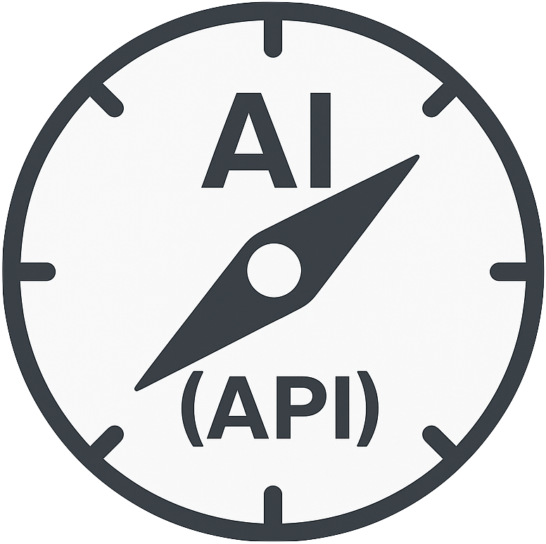
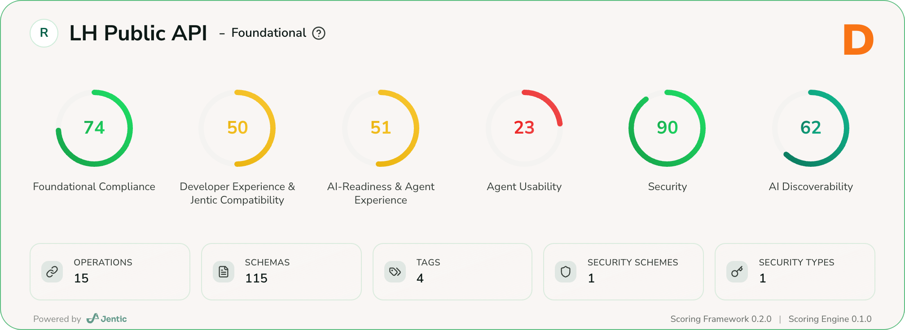
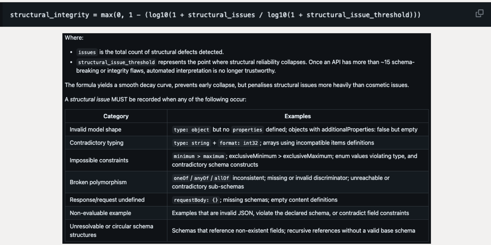
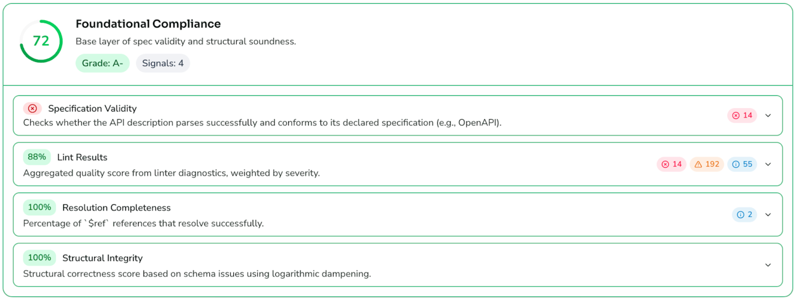
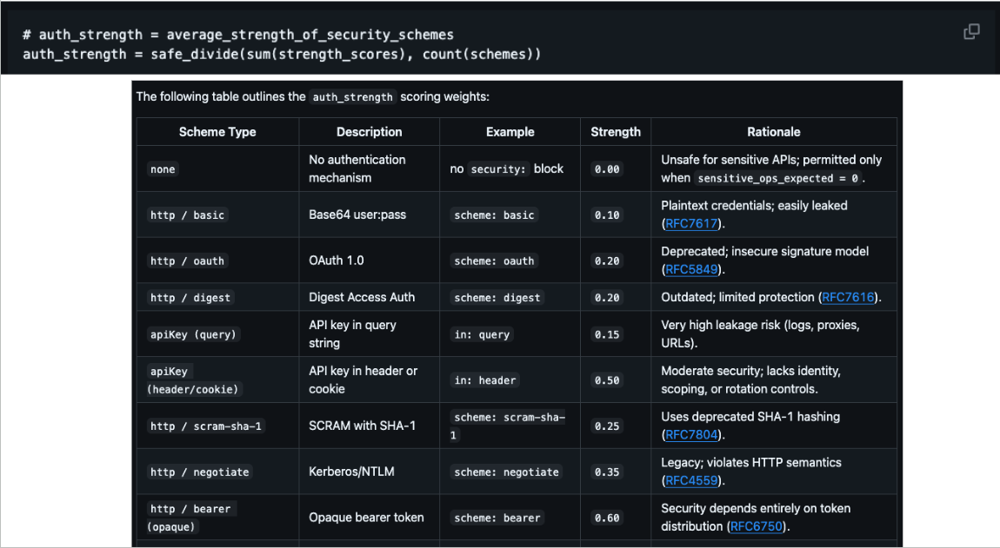
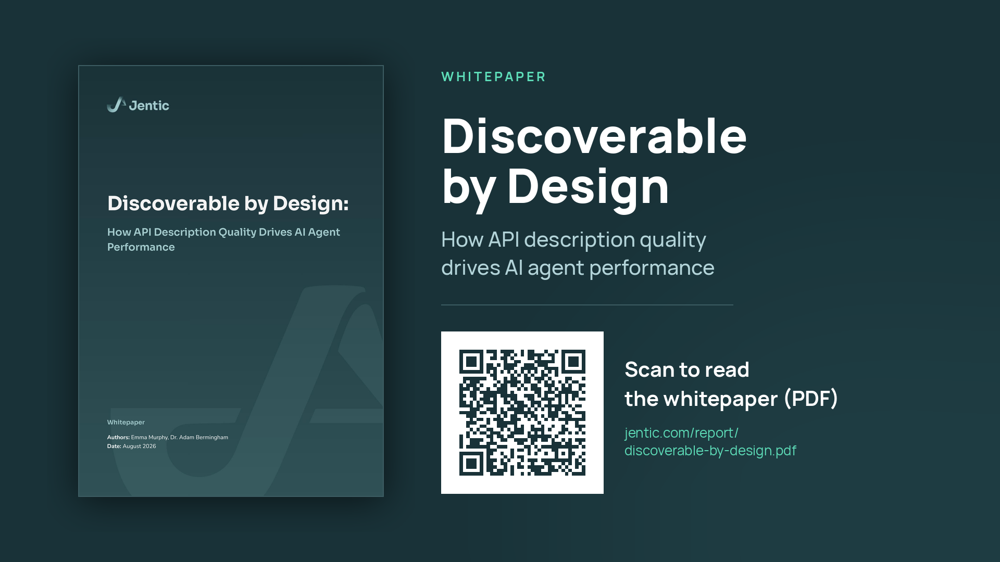
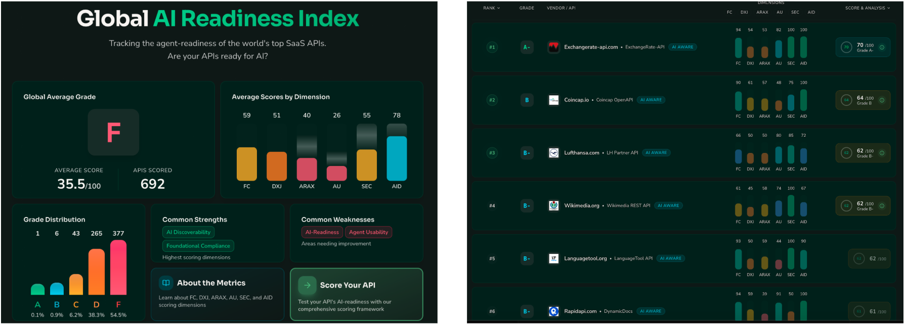

Measuring what matters
(27) You Can’t Improve What You Can’t Measure!

(28) Jentic's API AI-Readiness Framework
An open source framework which evaluates APIs across six developer & AI-readiness dimensions
- Foundational Compliance
- Developer Experience (including tooling compatibility)
- Agent Experience
- Agent Usability
- Security
- AI Discoverability
(29) AI-Readiness Scorecard

(30) Foundational Compliance
Evaluates if an API is structurally valid, standards-compliance, and parseable by
tooling.
The following signals comprise the dimension:
| Signal |
Description |
Normalisation |
| Spec Validity |
Checks whether the API parses as a valid OpenAPI |
binary |
| Resolution Completeness |
What proportion of $ref references successfully resolve
|
coverage |
| Lint Results |
Aggregated quality score from linter diagnostics, weighted by severity |
inverse weighted categorical |
| Structural Integrity |
Measures whether the API's underlying data model is coherent enough for automated
reasoning (semantic or logical defects that impact reliable interpretation)
|
logarithmic dampening |
(31) Structural Integrity Signal

(32) Foundational Compliance

(33) Developer Experience
Assesses clarity, documentation quality, example coverage, and compatibility with
developer tooling.
The following signals comprise the dimension:
| Signal |
Description |
Normalisation |
| Example Density |
Measures coverage of examples across all eligible specification locations |
coverage |
| Example Validity |
Checks all examples for Schema Conformance (JSON + XML) |
coverage |
| Doc Clarity |
Quantifies linguistic clarity of summaries and descriptions. Basically, how easy is
it to understand the intent, and the complexity of verbiage.
|
min-max inverted |
| Response Coverage |
Presence of meaningful success and error responses across full surface area |
coverage |
(34) AI-Readiness & Agent Experience
Evaluates where an API gives enough context for AI systems to understand its intent,
constraints, and expected behaviours.
The following signals comprise the dimension:
| Signal |
Description |
Normalisation |
| Summary Coverage |
Measures presence of concise summaries across eligible locations |
coverage |
| Description Coverage |
Measures presence of concise descriptions across eligible locations |
coverage |
| Type Specificity |
Rewards APIs that model values semantically, not just as loosely typed strings |
weighted categorical |
| Error Standardisation |
Favour structured error formats (RFC 9457/7807) |
coverage |
| Operation Identifier Quality |
Evaluate presence and distinctiveness of operationId values |
composite |
| Policy Presence |
Promote inclusion of SLA/rate-limit/policy metadata |
coverage |
| AI Semantic Surface |
Bonus uplift for AI-oriented metadata |
coverage |
(35) Agent Usability
Assesses how efficiently agents can navigate, combine, and execute API operations.
Measures orchestration safety and agent ergonomics.
The following signals comprise the dimension:
| Signal |
Description |
Normalisation |
| Complexity Comfort |
Measures document size, endpoint density, and schema complexity, penalised using a
logistic curve
|
logistic shaping |
| Distinctiveness |
Quantifies semantic separation between operations |
inverse semantic similarity |
| Navigation (pagination, hypermedia) |
Evaluates pagination and hypermedia affordances (HATEOAS, JSON:API, HAL) |
composite |
| Intent Legibility |
Evaluates verb-object semantic clarity |
similarity (LLM assisted) |
| Safety |
Evaluates idempotency & sensitive operation protection |
heuristic penalty |
| Tool Calling Alignment |
Represents alignment with LLM tool-calling expectations |
coverage |
(36) Security
Assesses if your API protects data, enforces access controls, and follows secure-by-design
practices.
The following signals comprise the dimension:
| Signal |
Description |
Normalisation |
| Auth Coverage |
Evaluates whether authentication is correctly applied to sensitive or modifying operations,
using intent-aware heuristics
|
heuristic penalty |
| Auth Strength |
Auth Strength
Measures robustness and correctness of authentication mechanisms declared by the API
using normative scores based on IANA auth-schemes, OAuth2, OIDC, API Key placement,
and mutual TLS
|
weighted categorical |
| Transport Security |
Requires HTTPS for externally exposed hosts |
binary |
| Secret Hygiene |
Detect and penalise hardcoded credentials |
binary |
| Sensitive Handling |
Evaluates the protection of PII/sensitive fields |
coverage |
| OWASP Posture |
Reflect severity-weighted risk findings |
severity weighted |
(37) Auth Strength Signal

(38) AI Discoverability
Evaluates how easily AI systems can locate, classify, and route to the API across
registries, workflows, and knowledge bases.
The following signals comprise the dimension:
| Signal |
Description |
Normalisation |
| Descriptive Richness |
Evaluates the semantic value of textual descriptions within an API description. |
coverage |
| Intent Phrasing |
Evaluates verb-object clarity of summaries and descriptions (Similar to Intent_legibility) |
semantic similarity (LLM assisted) |
| Workflow Context |
Evaluates indicators to workflow specifics including Arazzo/MCP/workflow references.
Also analyses existence of callbacks etc.
|
coverage |
| Registry Signals |
Detects metadata related to API gateways, llms.txt, APIs.json, MCP registries, externalDocs
links to Dev portals.
|
coverage |
| Domain Tagging |
Detect domain/taxonomy classification through the use of tags |
coverage |
(39) The Impact of AI Readiness (ROI)

- 59% ➔ 94% agent retrieval accuracy
- ~80% model cost reduction
- ~57% of APIs don't specify both summary & descriptions
(40) Landscape / Ecosystem Readiness Overview
